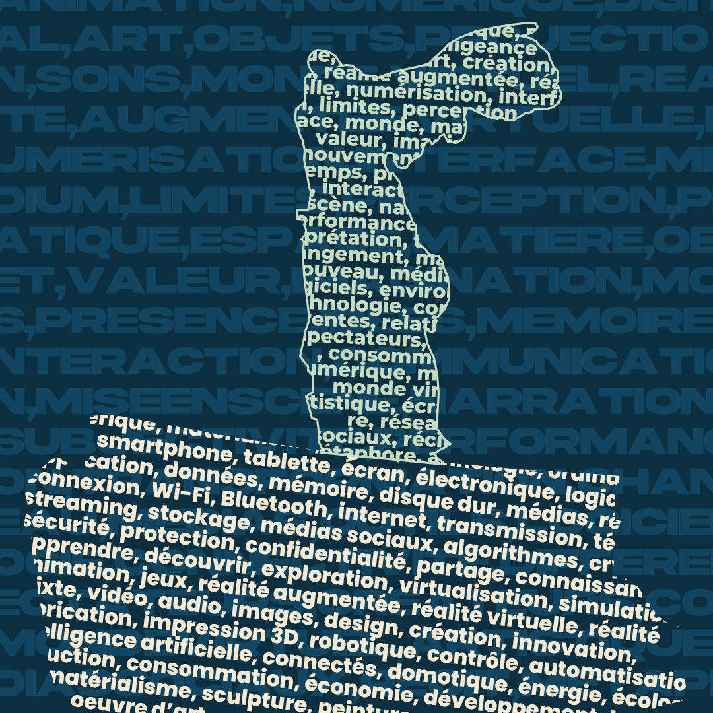

Matérialisme
le numérique a un effet négatif sur le matérialisme
la technologie numérique modifie notre vision de l’art
Projet
Faire une animation dans laquelle il y a une oeuvre d’art avec plusieurs objets et petit à petit, tous les objets se transforment en numérique, ça peut devenir des projection comme des sons ou autre pour qu’au final l’oeuvre se transpose dans un monde virtuel et n’existe plus irl